<meta data-freshmark-page data-title="Perkin 反应 — Freshmark" data-description="Perkin 反应的机理、立体选择性、香豆素合成特例与分层练习。" data-canonical="https://example.com/posts/chemistry/organic/perkin-reaction/" data-article="true"><main><header class="container article-header"><a class="back-link" href="/">← Back to all writing</a><h1>Perkin 反应</h1><p class="article-dek">Perkin 反应的机理、立体选择性、香豆素合成特例与分层练习。</p><div class="article-meta"><time datetime="2026-07-04">July 4, 2026</time><span>2 min read</span><span>有机化学 · 人名反应 · 化学竞赛</span><a href="index.md" download>Download Markdown</a></div></header><div class="article-wrap"><aside class="toc"><p>On this page</p><a href="#mechanism">Mechanism</a><a href="#exception">Exception</a><a href="#practice">Practice</a><a href="#q1-2022-">Q1 · 2022 北京高考</a><a href="#q2-">Q2 · 基础识别</a><a href="#q3-">Q3 · 基础产物预测</a><a href="#q4-">Q4 · 酸酐变化</a><a href="#q5-">Q5 · 逆合成</a><a href="#q6-">Q6 · 香豆素特例</a><a href="#q7-">Q7 · 二官能团底物</a><a href="#q8-">Q8 · 国初风格综合判断</a><a href="#">参考答案</a><a href="#">下载</a><a href="#end">End</a></aside><article class="prose"><p>在碱性催化剂的作用下，<strong>芳香醛</strong>与<strong>酸酐</strong>反应生成 β-芳基-α,β-不饱和羧酸，这一反应称为 <strong>Perkin 反应</strong>。所用碱性催化剂通常是与酸酐相对应的羧酸盐。</p>
<p>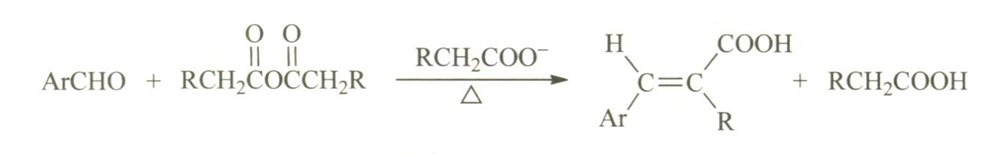</p>
<!--more-->
<p>顾名思义，Perkin 反应由 William Henry Perkin 发现。他本人也是第一届 Perkin Medal 的获得者。</p>
<h2 id="mechanism">Mechanism</h2>
<ol><li>在碱性催化剂的作用下，酸酐 α 位的质子被移去，形成<strong>碳负离子</strong>，随后亲核进攻芳香醛的羰基。</li></ol>
<p>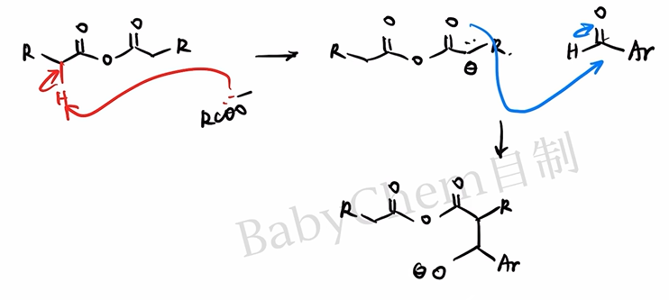</p>
<ol><li>进攻形成的<strong>烷氧基负离子</strong>仍具有亲核性，而酸酐羰基具有亲电性，因此可以发生分子内亲核进攻，形成含六元环的<strong>四面体中间体</strong>。</li></ol>
<p>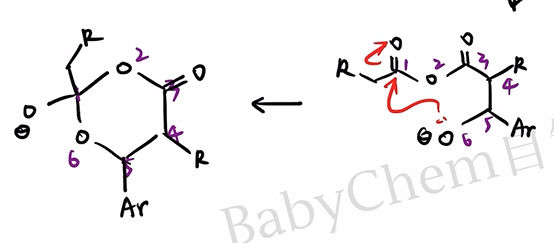</p>
<ol><li><strong>四面体中间体</strong>有两种坍塌方式：氧原子的孤对电子若回攻 6 号氧原子，相当于第二步的逆反应；若回攻 2 号碳原子，则形成较稳定的<strong>羧酸根离子</strong>。显然后者是合理路径。</li></ol>
<p>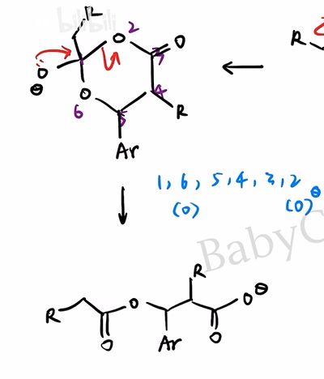</p>
<ol><li>体系中仍有酸酐，新生成的羧酸根离子会按<strong>加成-消除机理</strong>进攻酸酐。这里同样涉及四面体中间体的形成与坍塌，不再赘述。</li></ol>
<p>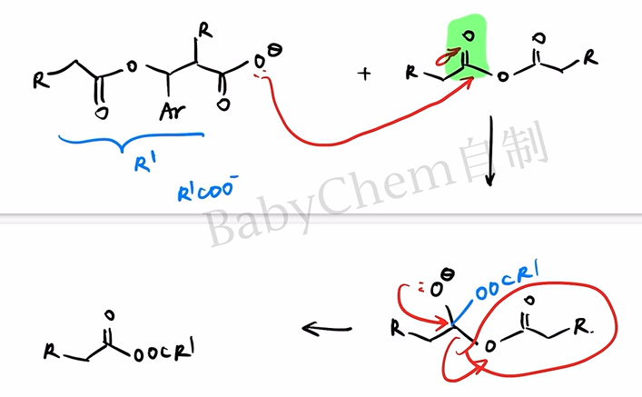</p>
<ol><li>新形成的<strong>不对称酸酐</strong>仍有酸性的 α-H；芳基取代一侧的 α-H 酸性更强，更容易被碱移去。所得碳负离子随后按 \(E_{1cb}\) 机理消除羧酸根离子，得到不饱和酸酐，水解、酸化后生成目标羧酸。</li></ol>
<p>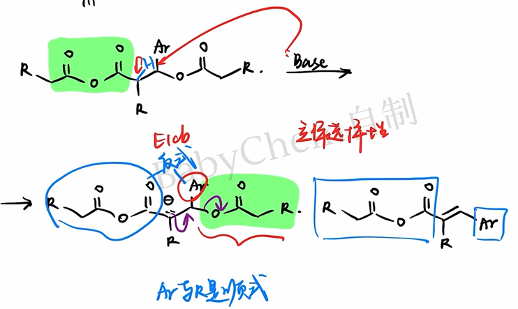</p>
<p>对于 \(E_{1cb}\) 消除，还要考虑产物的<strong>立体选择性</strong>。通常芳基 \(Ar\) 与羧基处于双键两侧，即生成较稳定的 \(E\) 构型产物，以减小空间位阻。</p>
<p>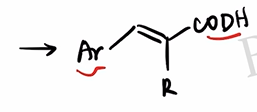</p>
<p>大功告成！</p>
<p>基础有机化学给出的总反应机理如下。</p>
<p>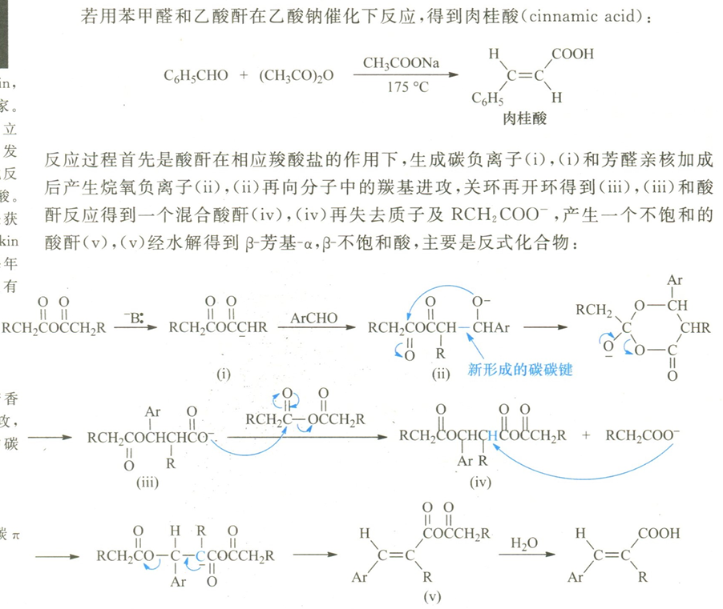</p>
<h2 id="exception">Exception</h2>
<p>Perkin 反应的一个重要立体化学特例是<strong>香豆素的合成</strong>。</p>
<p>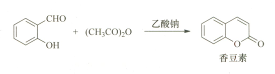</p>
<p>一般而言，第一步产物中的 \(-\mathrm{COOH}\) 与芳基倾向于处在双键两侧；但这一构型不利于下一步分子内酯化。</p>
<p>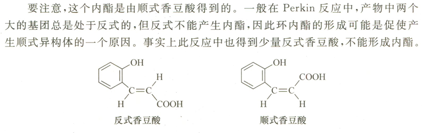</p>
<p>分子内酯化可将能够关环的构型持续转化为低能量的内酯，因此会改变表观的立体选择性，使反应最终生成香豆素。</p>
<p>这一点可能成为有机推断题的考点，需要格外注意。</p>
<p>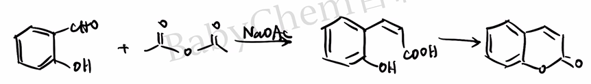</p>
<h2 id="practice">Practice</h2>
<p>下面按“高考真题—基础迁移—竞赛迁移”分层。Q3—Q8 为依据 Perkin 反应规律编写的练习，并非冒充历届真题。</p>
<h3 id="q1-2022-">Q1 · 2022 北京高考</h3>
<p>碘番酸的合成。</p>
<p>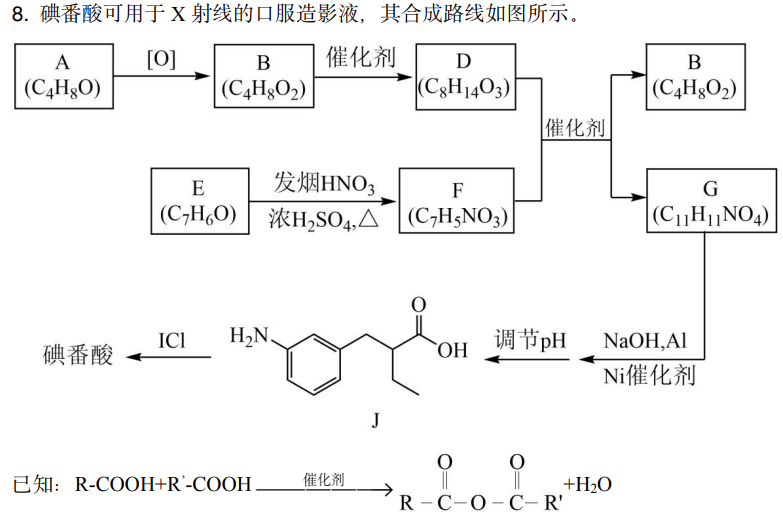</p>
<p>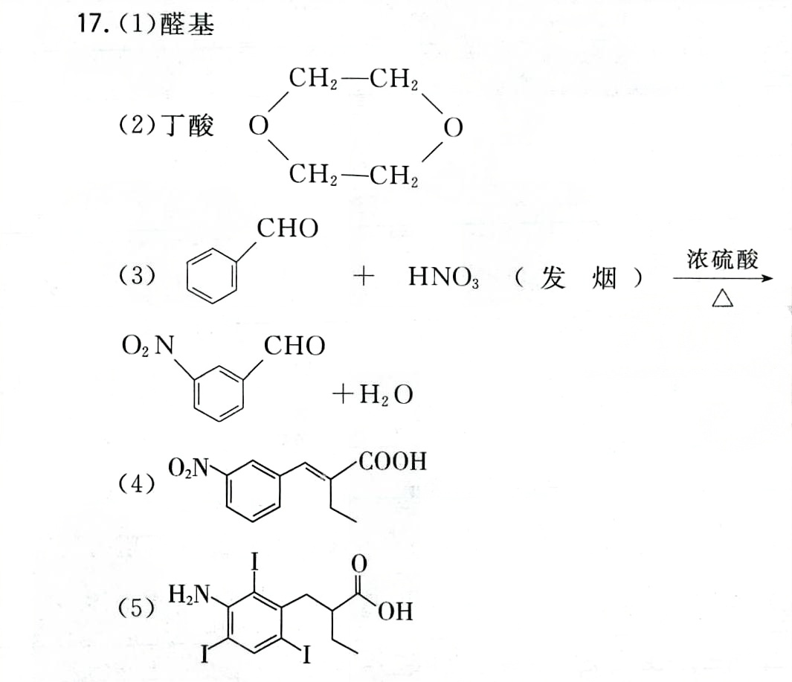</p>
<p>间硝基苯甲醛与正丁酸酐可以发生 Perkin 反应生成 G。写出 G 的结构简式，并注意其立体化学。</p>
<h3 id="q2-">Q2 · 基础识别</h3>
<p>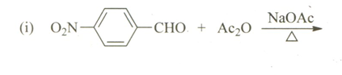</p>
<p>写出对硝基苯甲醛与乙酸酐在无水乙酸钠、加热条件下的主要有机产物。</p>
<h3 id="q3-">Q3 · 基础产物预测</h3>
<p>苯甲醛与乙酸酐在无水乙酸钠存在下加热，随后水解、酸化。</p>
<ol><li>写出主要有机产物的结构简式并标明 \(E/Z\) 构型。</li><li>说明乙酸钠在反应中的作用。</li><li>为什么通常选用与酸酐相对应的羧酸盐？</li></ol>
<h3 id="q4-">Q4 · 酸酐变化</h3>
<p>苯甲醛与丙酸酐在无水丙酸钠存在下加热，随后水解、酸化。写出主要产物，并指出产物中甲基来自哪一种反应物。</p>
<h3 id="q5-">Q5 · 逆合成</h3>
<p>拟用一步 Perkin 反应制备 \((E)\)-3-(4-硝基苯基)-2-甲基丙-2-烯酸。写出所需的芳香醛、酸酐和羧酸盐。</p>
<h3 id="q6-">Q6 · 香豆素特例</h3>
<p>水杨醛与乙酸酐在无水乙酸钠存在下加热可生成香豆素。</p>
<ol><li>写出 Perkin 缩合后、尚未关环时的羟基肉桂酸中间体。</li><li>指出由该中间体生成香豆素的反应类型。</li><li>解释为什么这里观察到的立体选择性与普通 Perkin 反应不同。</li></ol>
<h3 id="q7-">Q7 · 二官能团底物</h3>
<p>对苯二甲醛与足量乙酸酐反应。写出充分反应并水解、酸化后的主要产物，标出两个双键的主要构型，并给出 1 mol 对苯二甲醛至少需要的乙酸酐物质的量。</p>
<h3 id="q8-">Q8 · 国初风格综合判断</h3>
<p>在其他条件相同时，比较下列芳香醛发生 Perkin 反应的相对速率，并说明理由：</p>
\[p\text{-}\mathrm{NO_2C_6H_4CHO},\quad
\mathrm{C_6H_5CHO},\quad
p\text{-}\mathrm{CH_3OC_6H_4CHO}\]
<p>进一步判断呋喃甲醛能否作为 Perkin 反应底物，并简述依据。</p>
<h3 id="">参考答案</h3>
<ol><li><strong>Q1</strong>：G 为以间硝基苯基和乙基取代的 α,β-不饱和羧酸；稳定构型中芳基与羧基分居双键两侧。完整结构以原卷路线编号为准。</li><li><strong>Q2</strong>：主要生成 \((E)\)-3-(4-硝基苯基)丙-2-烯酸，即对硝基肉桂酸。</li><li><strong>Q3</strong>：产物为 \((E)\)-肉桂酸，\(\mathrm{C_6H_5CH{=}CHCOOH}\)。乙酸根夺取酸酐 α-H，促使亲核体形成；采用对应羧酸盐可减少不同酰基之间的交换及副反应。</li><li><strong>Q4</strong>：主要产物为 \((E)\)-2-甲基-3-苯基丙-2-烯酸，\(\mathrm{C_6H_5CH{=}C(CH_3)COOH}\)；甲基来自丙酸酐。</li><li><strong>Q5</strong>：对硝基苯甲醛、丙酸酐和丙酸钠。</li><li><strong>Q6</strong>：中间体为邻羟基肉桂酸；随后发生分子内酯化。能靠近并关环的构型被不可逆或优势地转化为稳定的六元内酯，推动平衡并改变表观选择性。</li><li><strong>Q7</strong>：主要产物为 \((E,E)\)-1,4-苯二丙烯酸（\(\mathrm{HOOCCH{=}CH{-}C_6H_4{-}CH{=}CHCOOH}\)）；至少需要 2 mol 乙酸酐。</li><li><strong>Q8</strong>：速率通常为 \(p\)-硝基苯甲醛 \(&gt;\) 苯甲醛 \(&gt;\) \(p\)-甲氧基苯甲醛。吸电子基增强醛羰基的亲电性，给电子基则削弱它。BTW,呋喃甲醛虽为杂芳醛，仍可发生该反应，生成呋喃丙烯酸类产物。</li></ol>
<h3 id="">下载</h3>
<ul><li>[下载：Perkin 反应分层练习（PDF）](perkin-practice.pdf)</li><li>[下载：Perkin 反应参考答案（PDF）](perkin-answers.pdf)</li><li><a href="https://www.gaokzx.com/Fup/document/202209/09-08_091738-10100.pdf">2022 北京高考化学试题及答案（PDF）</a></li><li><a href="https://gaokao.eol.cn/shiti/hx/202208/t20220819_2242173.shtml">2022 北京高考化学答案下载页（中国教育在线）</a></li><li><a href="https://www.chemsoc.org.cn/library/copy/68.html">第 23 届中国化学奥林匹克初赛试题及解答（中国化学会）</a></li></ul>
<blockquote><p>说明：外部整卷链接用于核对原题与继续练习；Q3—Q8 是围绕 Perkin 反应设计的迁移题，不属于上述试卷。</p></blockquote>
<h2 id="end">End</h2>
<p>特别鸣谢 B 站 @Babychem，机理图片来自这位 UP 的视频：</p>
<p><a href="https://www.bilibili.com/video/BV1VG4y1q7xh/?share_source=copy_web&amp;vd_source=8df86ec0f66b0d7c70b7414a1a60bc6a">【基础有机化学 L18-7 芳香醛的缩合】</a></p></article></div></main>